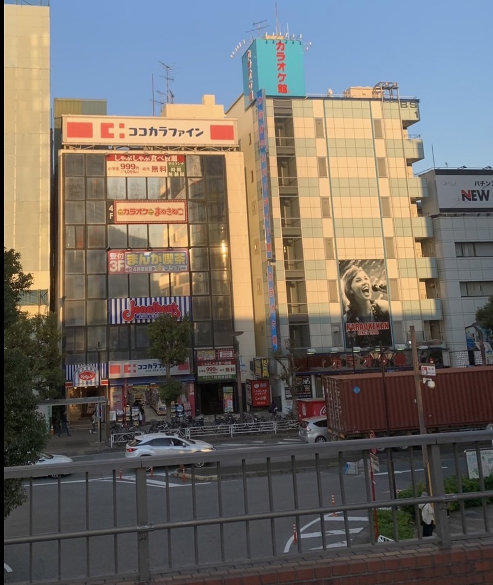
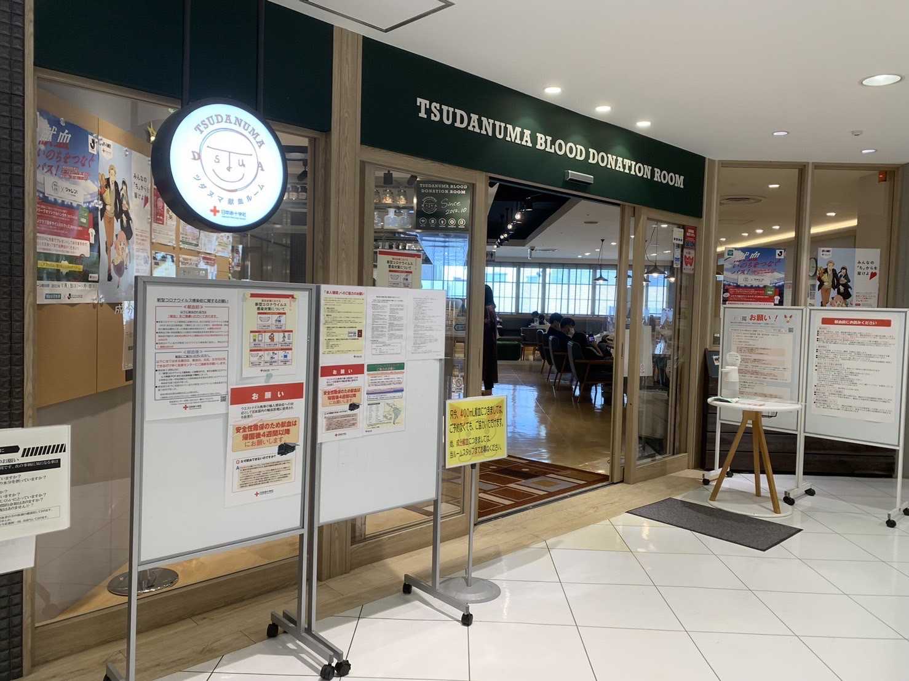

このページでは、友達と遊ぶことができる場所、楽しく時間をつぶせる場所をご紹介。
暇つぶしにおすすめな場所ひとつ目は、カラオケです。
なかでも千葉工業大学生に最もオススメなのはカラオケまねきねこで、津田沼キャンパスからは徒歩5分で向かうことが可能
ちょっとした空き時間にも夕方以降思いっきり歌いたい方にも、それぞれお得なプランが用意されていて、大変おすすめです！
是非ご利用してみてください。

料金は昼の時間であれば平日30分税込110円、週末30分税込165円。
フリータイム、平日税込550円、週末税込1210円。
また、大学生はアプリで無料の会員になることで、まねきねこのフリータイム、通称｢まふ｣が利用できます。
それを利用した場合、夕方18時以降は翌日早朝5時まで、平日週末それぞれ税込で770円、1650円で利用できる!
24時間営業
住所:千葉県習志野市津田沼1丁目11-4 JPT津田沼ビル4F
電話番号: 047-405-2001
暇つぶしにおすすめな場所ふたつ目は、献血です。
献血はキャンパスへ定期的に来てくれる献血バスとは別に、津田沼駅北口目の前の｢Viit｣の6階にも献血ルームがあり、津田沼キャンパスからは徒歩10分で向かうことが可能!
献血は医療の現場で欠かせないもので、事故や手術、病気の治療など、様々な状況で必要とされているが、現在献血協力者が減少してきているため、是非参加してみてください。

料金はかからず無料で参加することができるものの、受け付けから退出まで最長3時間程を要するため、多めの空き時間を作れた時に行ってみることをおすすめします。
大まかな流れは、受付→質問回答→問診→ヘモグロビン濃度測定→採血→休憩→終了
痛みを感じるのは、ヘモグロビン濃度測定の時と採決の時の2回のみで、プロの看護師がやってくれるので痛みも大きくなく、安心して受けられます。
また、献血を行うことで血液検査を無料で受けることができ、専用アプリで結果を見ることが出来るため、行って損はありません。
その上、終了後は少なくとも10分以上の休憩を行わなくてはならないため、その間お菓子やドリンクが飲み食べ放題となるのも嬉しいところです。
【成分献血】10:00～12:00/14:00～17:00
※受付状況により、成分献血の受付を早めに終了させて頂くことがあります。
【400・200mL】【骨髄バンクドナー登録】10:00～13:00/14:00～17:30
※400mL献血・200mL献血は土曜日、日曜日・祝日は、昼時間帯の中断なしで献血の実施。
※津田沼ビート営業開始時間（10:00）より前にご入館いただくことはできませんのでご留意ください。
千葉県船橋市前原西2-19-1 津田沼ビート6階
電話番号:047-493-0322